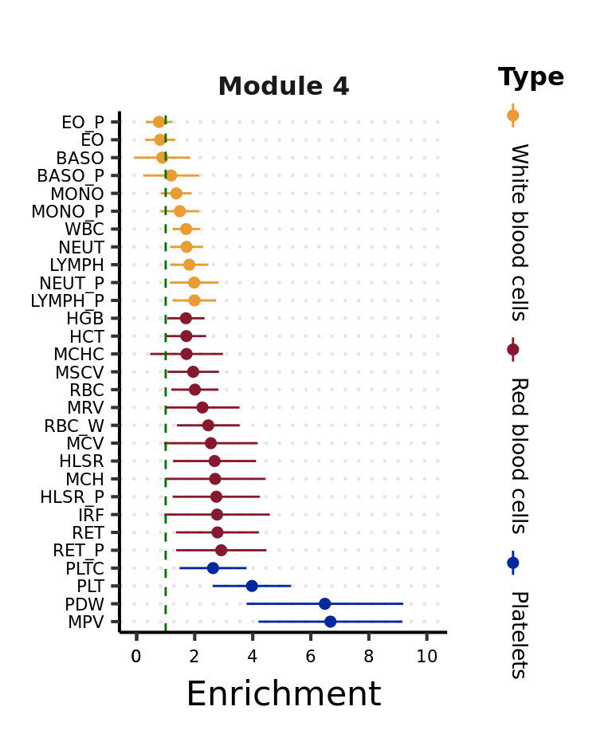
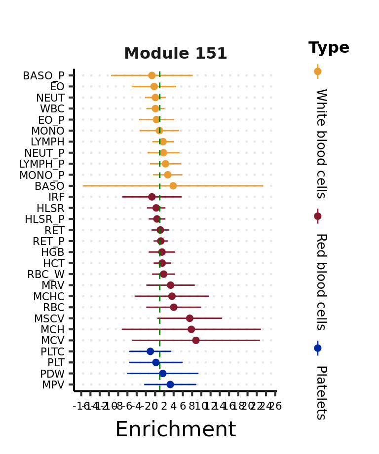
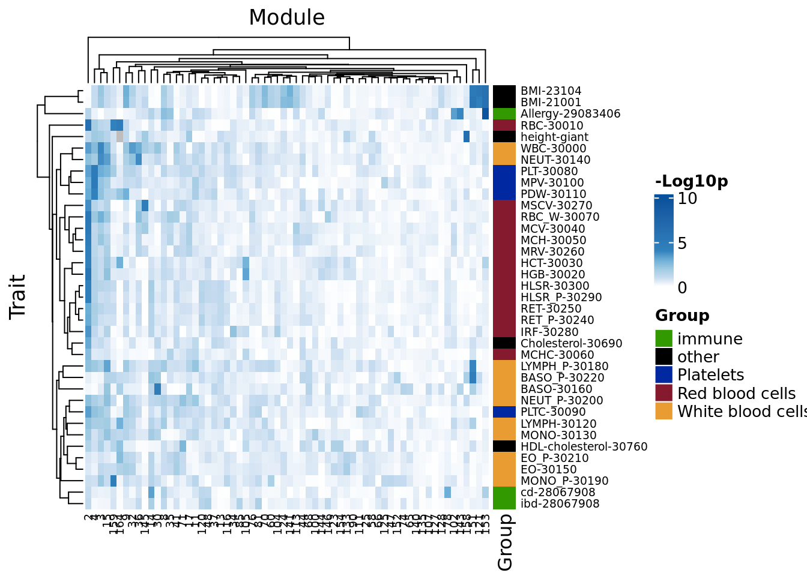

To visualize the above enrichment result of a module across traits,
# paras and I/O -----
module <- 4
file_h2_enrich <- paste0('/project2/xuanyao/llw/ldsc/h2_enrich_comb/M', module, '_blood_traits.results')
# read data -----
h2_enrich <- fread(file_h2_enrich, header = TRUE, sep = "\t")
# plot -----
h2_enrich <- arrange(h2_enrich, `GWAS Group`, desc(trait_id))
h2_enrich$trait_id <- factor(h2_enrich$trait_id,
levels = h2_enrich$trait_id,
labels = paste(h2_enrich$`Trait Abbreviation`))
# 95% CI
xlow <- min(h2_enrich$Enrichment - 1.96*h2_enrich$Enrichment_std_error)
xupp <- max(h2_enrich$Enrichment + 1.96*h2_enrich$Enrichment_std_error) + 1
# title
facet_lab <- paste0("Module ", module)
names(facet_lab) <- unique(h2_enrich$module)
# order traits by enrichment score
h2_enrich$trait_id <- factor(h2_enrich$trait_id,
levels = h2_enrich %>%
group_by(`GWAS Group`) %>%
arrange(desc(Enrichment), .by_group = TRUE) %>%
ungroup() %>%
pull(trait_id))
# plot error bar
base_fig <- ggplot(h2_enrich,
aes(x = Enrichment,
y = trait_id,
color = `GWAS Group`)) +
facet_wrap(~module, labeller = labeller(module = facet_lab)) +
geom_point(size = 2) +
geom_linerange(aes(xmin = Enrichment - 1.96*`Enrichment_std_error`, xmax = Enrichment + 1.96*`Enrichment_std_error`),
size = 0.5) +
geom_vline(xintercept = 1, linetype = "dashed", color = "#007300") +
labs(y = NULL, color = "Type", shape = NULL)
base_fig +
scale_x_continuous(
limits = c(xlow, xupp),
breaks = c(0, seq(-100, 100, by = 2))
) +
scale_colour_manual(
breaks = c("White blood cells", "Red blood cells", "Platelets"),
values = c("Platelets" = "#0028a1", "Red blood cells" = "#85192d", "White blood cells" = "#e89c31"),
guide = guide_legend(label.position = "bottom",
label.theme = element_text(angle = -90, size = 10))
) +
theme_my_pub() +
theme(
panel.grid.major.y = element_line(linetype = "dotted"),
legend.background = element_blank(),
strip.text = element_text(face = "bold", size = 12),
strip.background = element_blank(),
axis.text = element_text(size = 8)
)
Another module,

To look into the pattern of enrichment of trait heritability across modules, I plotted the enrichment p-values for every pair of (module, trait).
## Warning in FUN(X[[i]], ...): Column name 'Enrichment_p' not found in column name
## header (case sensitive), skipping.library(ComplexHeatmap)## Loading required package: grid## ========================================
## ComplexHeatmap version 2.10.0
## Bioconductor page: http://bioconductor.org/packages/ComplexHeatmap/
## Github page: https://github.com/jokergoo/ComplexHeatmap
## Documentation: http://jokergoo.github.io/ComplexHeatmap-reference
##
## If you use it in published research, please cite:
## Gu, Z. Complex heatmaps reveal patterns and correlations in multidimensional
## genomic data. Bioinformatics 2016.
##
## The new InteractiveComplexHeatmap package can directly export static
## complex heatmaps into an interactive Shiny app with zero effort. Have a try!
##
## This message can be suppressed by:
## suppressPackageStartupMessages(library(ComplexHeatmap))
## ========================================# I/O & paras -----
file_coloc_fig_order <- '/project2/xuanyao/llw/ldsc/plots/coloc_m_trait_order.rds'
coloc_fig_order <- readRDS(file_coloc_fig_order)
h2_mat <- h2_enrich %>%
mutate(`Trait Abbreviation` = paste(`Trait Abbreviation`, trait_id, sep = "-")) %>%
filter(module %in% as.numeric(levels(coloc_fig_order$Module))) %>%
pivot_wider(
id_cols = module,
names_from = `Trait Abbreviation`,
values_from = Enrichment_p
) %>%
column_to_rownames(var = "module") %>%
as.matrix() %>%
t()
col_break <- c(0, 1:4, 10)
annot_trait <- h2_enrich %>%
mutate(`Trait Abbreviation` = paste(`Trait Abbreviation`, trait_id, sep = "-")) %>%
distinct(`GWAS Group`, `Trait Abbreviation`) %>%
left_join(
distinct(coloc_fig_order, trait_type, trait_color),
by = c("GWAS Group" = "trait_type")
) %>%
column_to_rownames(var = "Trait Abbreviation")
annot_trait <- annot_trait[rownames(h2_mat), ]
row_ha <- HeatmapAnnotation('Group' = annot_trait$`GWAS Group`,
col = list("Group" = setNames(annot_trait$trait_color, annot_trait$`GWAS Group`)),
which = "row")
Heatmap(-log10(h2_mat),
name = "-Log10p", #title of legend
column_title = "Module", row_title = "Trait",
row_names_gp = gpar(fontsize = 7), # Text size for row names
column_names_gp = gpar(fontsize = 7),
right_annotation = row_ha,
col = circlize::colorRamp2(col_break,
c("white", RColorBrewer::brewer.pal(n = length(col_break), name = "Blues")[-1]))
)
sessionInfo()## R version 4.1.2 (2021-11-01)
## Platform: x86_64-conda-linux-gnu (64-bit)
## Running under: Ubuntu 20.04.3 LTS
##
## Matrix products: default
## BLAS/LAPACK: /scratch/midway2/liliw1/conda_env/rstudio-server/lib/libopenblasp-r0.3.18.so
##
## locale:
## [1] LC_CTYPE=en_US.UTF-8 LC_NUMERIC=C
## [3] LC_TIME=en_US.UTF-8 LC_COLLATE=en_US.UTF-8
## [5] LC_MONETARY=en_US.UTF-8 LC_MESSAGES=en_US.UTF-8
## [7] LC_PAPER=en_US.UTF-8 LC_NAME=C
## [9] LC_ADDRESS=C LC_TELEPHONE=C
## [11] LC_MEASUREMENT=en_US.UTF-8 LC_IDENTIFICATION=C
##
## attached base packages:
## [1] grid stats graphics grDevices utils datasets methods
## [8] base
##
## other attached packages:
## [1] ComplexHeatmap_2.10.0 data.table_1.14.2 forcats_0.5.1
## [4] stringr_1.4.0 dplyr_1.0.7 purrr_0.3.4
## [7] readr_2.1.2 tidyr_1.2.0 tibble_3.1.7
## [10] ggplot2_3.3.6 tidyverse_1.3.1
##
## loaded via a namespace (and not attached):
## [1] httr_1.4.2 sass_0.4.0 jsonlite_1.7.3
## [4] foreach_1.5.2 modelr_0.1.8 bslib_0.3.1
## [7] assertthat_0.2.1 highr_0.9 stats4_4.1.2
## [10] cellranger_1.1.0 yaml_2.2.2 pillar_1.7.0
## [13] backports_1.4.1 glue_1.6.2 digest_0.6.29
## [16] RColorBrewer_1.1-3 rvest_1.0.2 colorspace_2.0-3
## [19] htmltools_0.5.2 pkgconfig_2.0.3 GetoptLong_1.0.5
## [22] broom_0.7.12 haven_2.4.3 scales_1.2.0
## [25] tzdb_0.2.0 generics_0.1.2 farver_2.1.1
## [28] IRanges_2.28.0 ellipsis_0.3.2 withr_2.5.0
## [31] BiocGenerics_0.40.0 cli_3.3.0 magrittr_2.0.3
## [34] crayon_1.5.1 readxl_1.3.1 evaluate_0.14
## [37] fs_1.5.2 fansi_1.0.3 doParallel_1.0.17
## [40] xml2_1.3.3 tools_4.1.2 hms_1.1.1
## [43] GlobalOptions_0.1.2 lifecycle_1.0.1 matrixStats_0.61.0
## [46] S4Vectors_0.32.0 munsell_0.5.0 reprex_2.0.1
## [49] cluster_2.1.2 compiler_4.1.2 jquerylib_0.1.4
## [52] rlang_1.0.3 iterators_1.0.14 rstudioapi_0.13
## [55] circlize_0.4.15 rjson_0.2.21 rmarkdown_2.11
## [58] gtable_0.3.0 codetools_0.2-18 DBI_1.1.3
## [61] R6_2.5.1 lubridate_1.8.0 knitr_1.37
## [64] fastmap_1.1.0 utf8_1.2.2 clue_0.3-61
## [67] shape_1.4.6 stringi_1.7.6 parallel_4.1.2
## [70] Rcpp_1.0.8.3 vctrs_0.4.1 png_0.1-7
## [73] dbplyr_2.1.1 tidyselect_1.1.1 xfun_0.29